| 日付 | 2009年11月3日（火） |
|---|---|
| 山域 | 奥秩父 |
| メンバー | 単独 |
| 山行形態 | 日帰り |
| アクセス | 電車、バス |
| ルート (Map) | 八幡→野栗沢→赤岩峠→大ナゲシ往復→出合 |
大ナゲシとは一風変わった名前の山だが、遠くから見ても目立つ岩峰だ。
西上州の南部にある山で、この山の存在を知っている人は少ない。
いろいろな場所からこの山を見て、長い間登りたいと思っていた。
紅葉が美しそうな山なので秋を狙っていたが、少し時機を逸してしまった。
8:35 八幡バス停到着。標高480m。
バスの運転手さんは話し好きで非常に親切だった。

本日は快晴。空も山も美しい。
この山は何としても快晴の日に登ろうと思っていた。
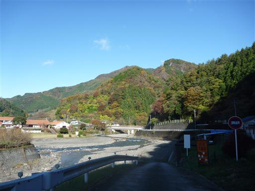
目の前には左に焼岩、右に大山が見える。
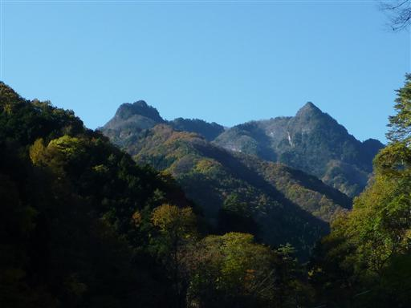
長い長い車道を歩いていくと、道幅はだんだん細くなってくる。
車道歩きはおおよそ1時間半程度だ。
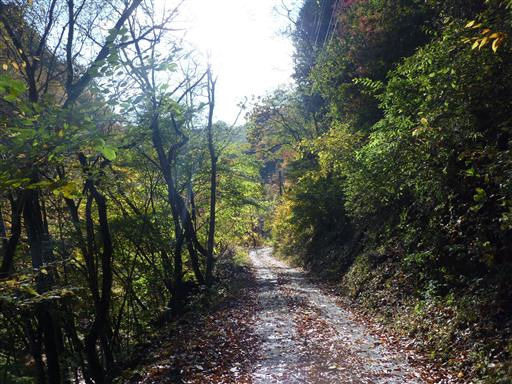
登山道に到着。沢沿いの道を登っていく。
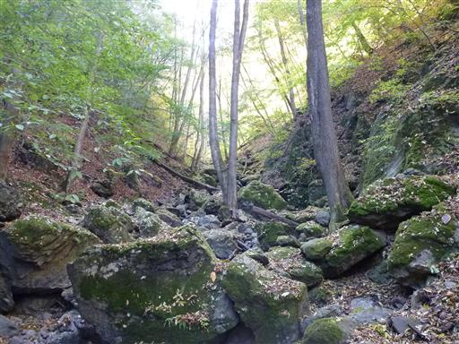
標高をあげていくと付近は雪が現れてくる。
紅葉など疾うの昔に終わっていて、完全に冬の景色だ。
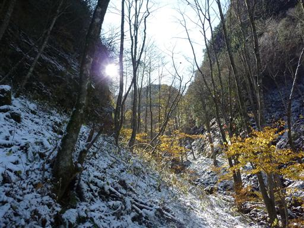
樹間から大ナゲシの姿が見える。
遠くから見ると鋭く尖った山なのだが、ここから見ると割りと平凡な姿だ。
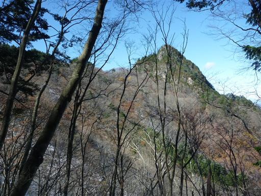
赤岩峠に到着。右は大ナゲシ、左に行くと赤岩岳だ。
上州と武州をつなぐ峠道で昔は人の往来があったのだろうが、
今は時折ハイカーが訪れるだけの静かな峠だ。
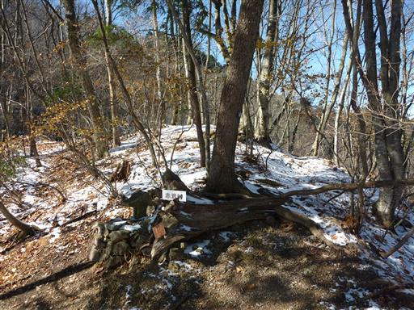
少し歩いたところから振り返ると赤岩岳の岩峰が見えてくる。
垂直に立ち上がるその姿は圧倒的な存在感だ。
赤岩岳からその奥に連なる赤岩尾根は八丁峠まで続いていて、難易度は非常に高い。
いつかは行きたいと思っていた山だが、この姿を見て挑戦する意欲がわいてきた。
今年はもう雪があるので、来年の新緑の頃にでも行ってみようと思う。
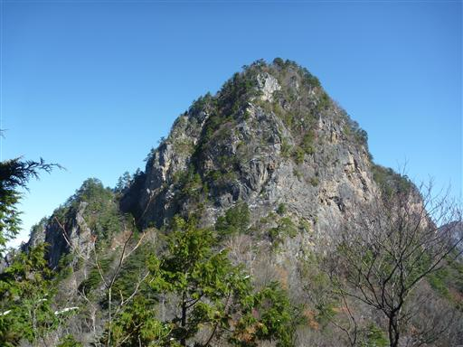
赤岩岳の稜線の向こうには両神山が横たわっている。
この辺りの山域の主峰で、一際大きな山だ。
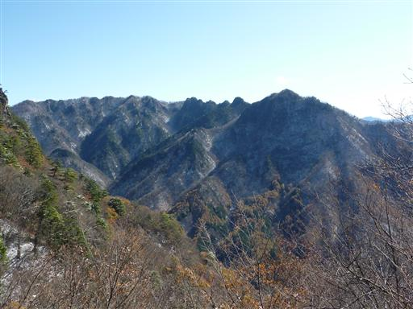
大ナゲシの直下は岩場になっている。
左のルートと右のルートがあるが、見た感じ右のルートの方が難しそうだ。
行きは右のルート、帰りは左のルートを通ることにする。
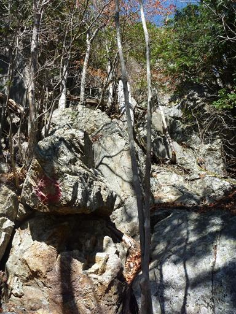
右ルートは鎖がなくロープが一本あるだけ。
頼りなげなロープに捕まるのは危険なので、岩のみをつかんで登っていく。
なかなか難しい岩場だった。そこを抜けると頭上に青空が広がる。
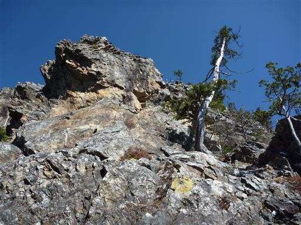
岩の上からは大展望が広がる。上武国境稜線には
天丸山、大山、帳付山、諏訪山と多くの登山者にとっては馴染みの少ない山々が広がる。
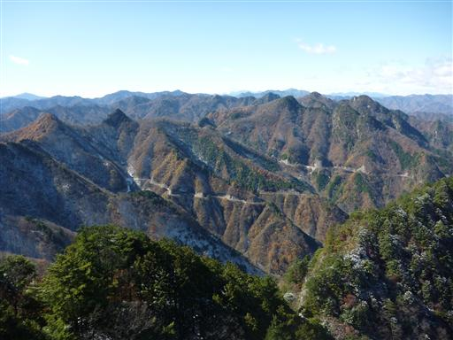
北の方には浅間山が見える。もう山頂部は真っ白だ。
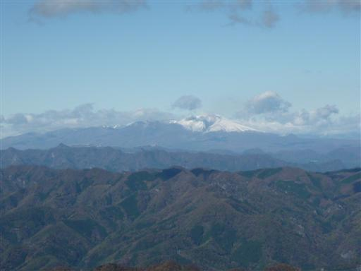
11:35 大ナゲシ山頂到着。標高1532m。
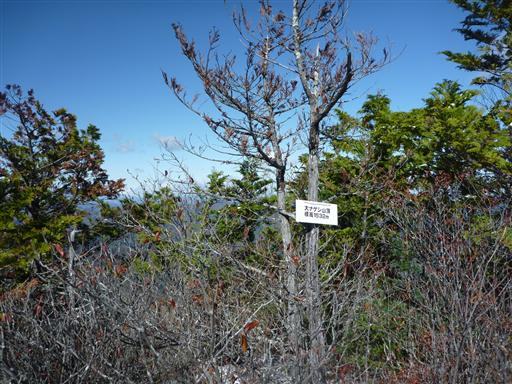
ここまで誰一人として会わなかったのに、狭い山頂には7名もの大パーティが占拠している。
静かな山頂を期待していたのに、マイナーな岩峰にこの大パーティは少々辛い。
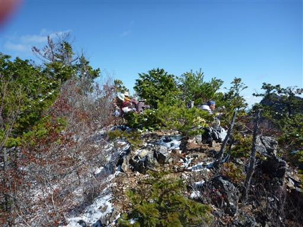
山頂からは赤岩岳とそこから続く赤岩尾根がよく見える。
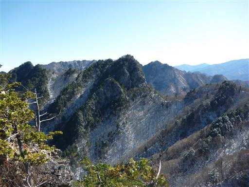
北西に見える白いピークは二子山。過去2度登った大好きな山だ。
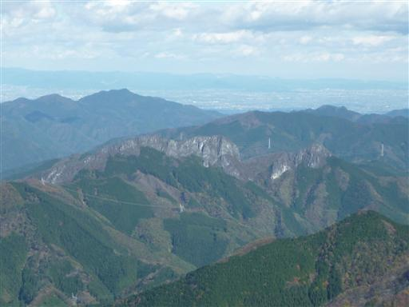
遠くには丸い頭を二つ持った御荷鉾山も見える。これも2年程前に登った山だ。
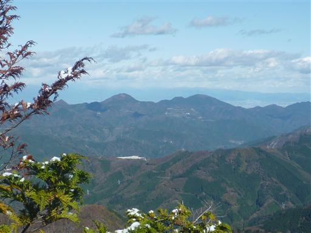
30分ほど滞在し、賑やかな山頂から下山する。
下りにとった道は鎖がしっかりしていて、読み通り難易度は低かった。
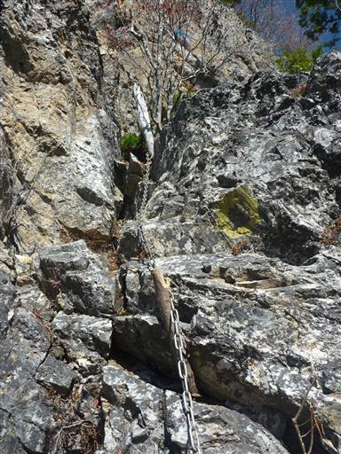
群馬側から登ってきたので、赤岩峠からは埼玉側に下山する。
南側斜面はほとんど雪がない。
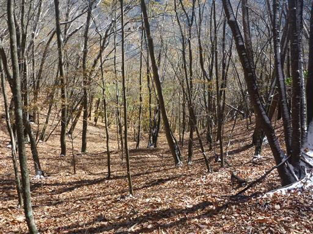
木の葉はほとんどが落ちて地面に積もっている。
落ちたばかりの葉が多いのか、落葉もそこそこ鮮やかだ。
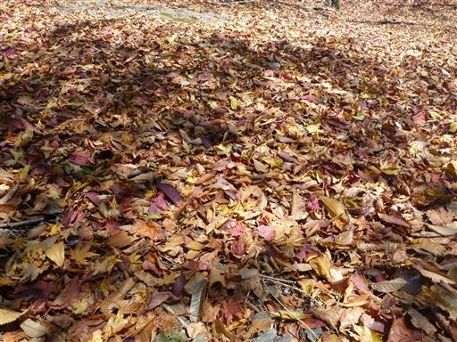
下方の谷筋に集落が見えてきた。
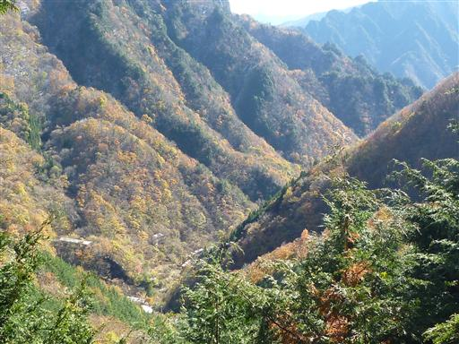
下りてきたところは無人の集落。この辺りには日窒鉱山があるので、
そこで働いていた人の集落だったのだろう。
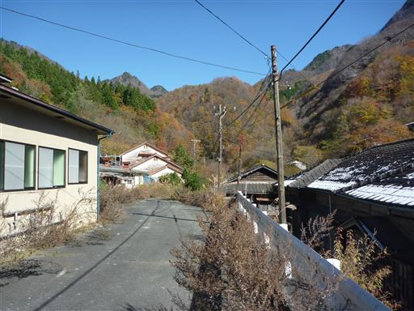
振り返ると、稜線上に赤岩尾根の白い岩肌が見えている。
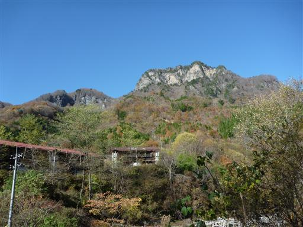
ここから1時間半の車道歩き。狭い道だが意外に車通りが多い。
群馬に抜けられる道というのもあるが、紅葉目的の観光者が多いようだ。
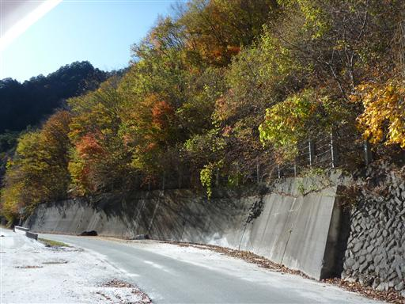
確かにこの辺りは岩と紅葉がよくマッチしていて、美しいところだ。
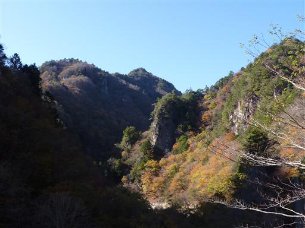
14:18 出合バス停到着。標高715m。
秩父槍ヶ岳に登ったときに使ったこの路線バスは全く乗客がいなかったのに、
紅葉シーズンの今日のバスは大混雑だった。
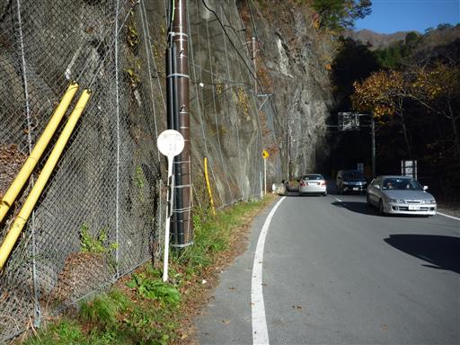